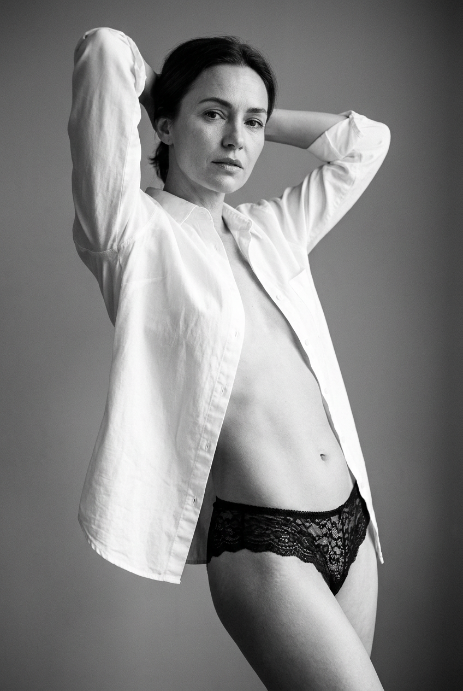
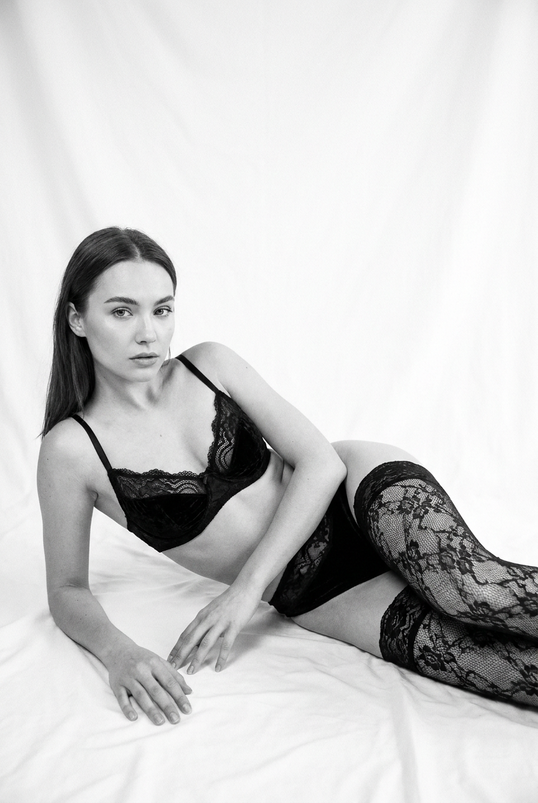
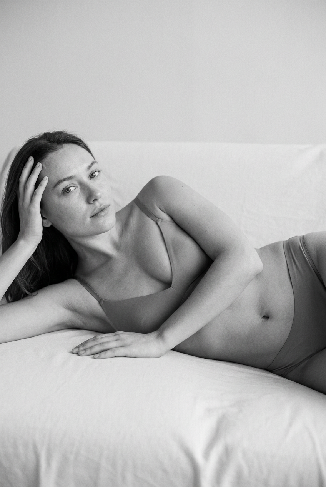
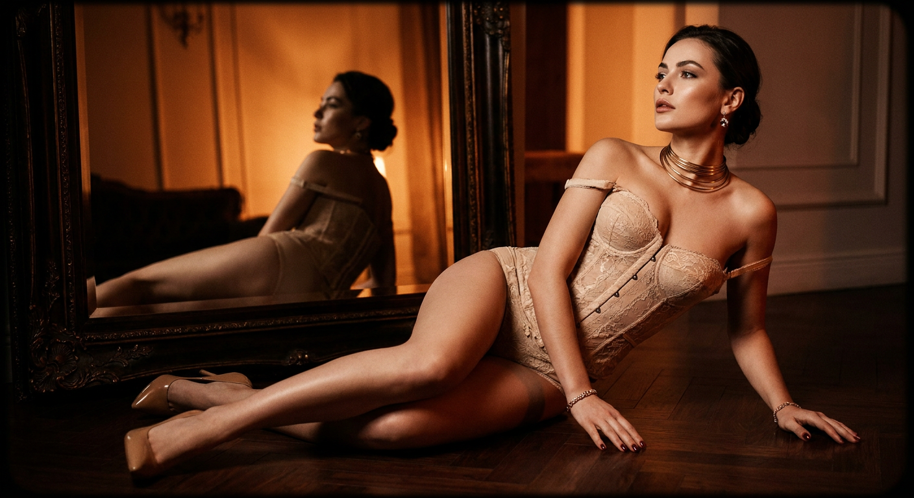
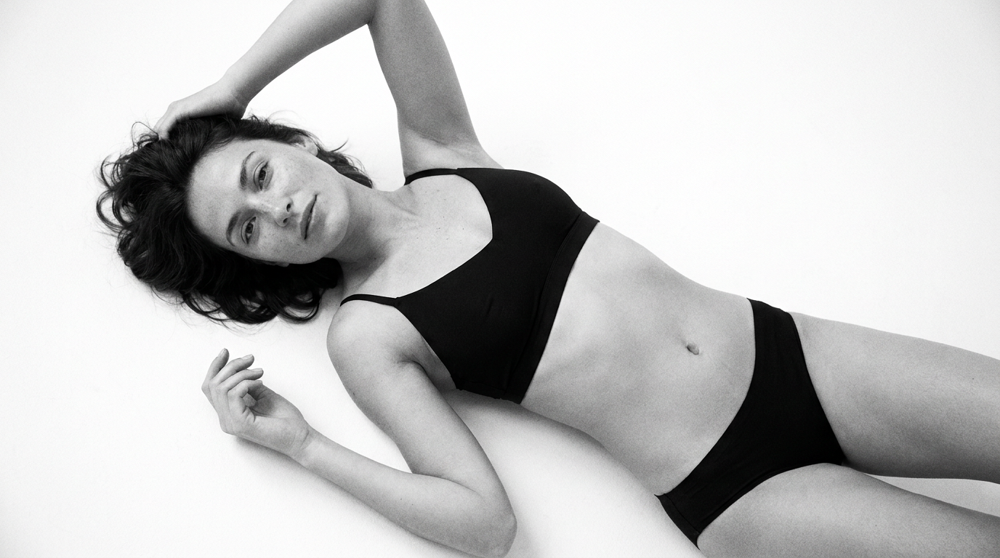
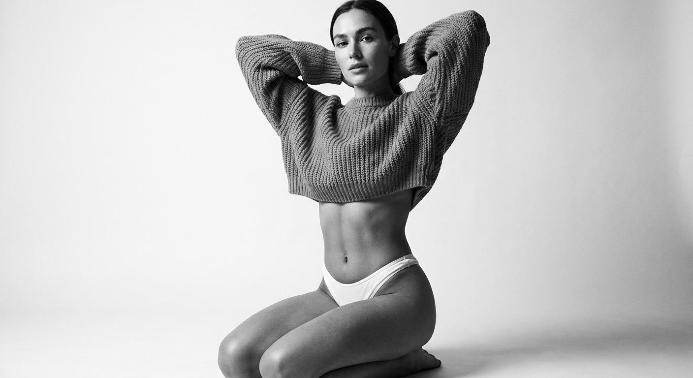
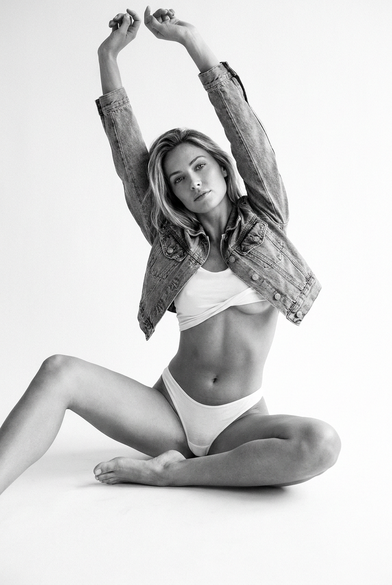
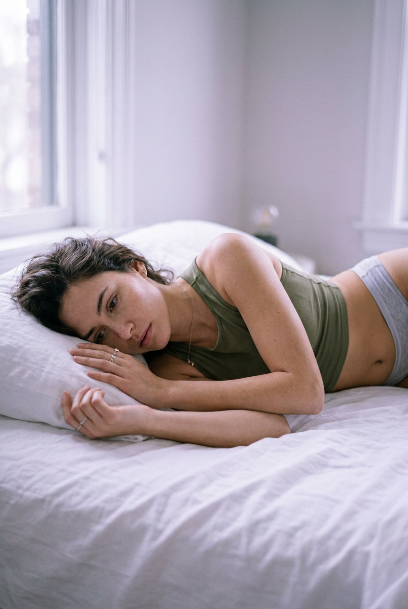
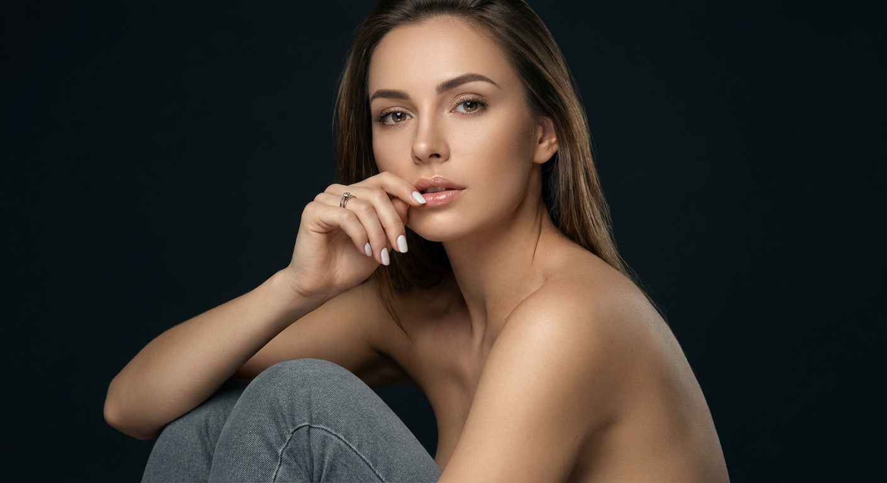

ИИ-фото в стиле ню: 9 промптов для нейросети

Собрать чувственный фотосет без студии, команды и десятков неудачных дублей непросто: нейросеть часто путает позу, портит руки и превращает бельевой образ в случайный набор деталей. Хороший промпт задаёт не только одежду, но и свет, объектив, композицию и настроение.
В подборке — девять готовых сценариев для взрослой модели: чёрно-белая студия, съёмка на простынях, винтажный интерьер с зеркалом, образ со свитером, джинсовой курткой и мягкий домашний кадр. Все варианты построены вокруг эстетики ню без откровенной наготы.
Как сгенерировать такое фото: пошагово
Нужен снимок анфас при ровном свете, лицо в кадре целиком, без тёмных очков и головных уборов. Разрешение от 1000 пикселей по короткой стороне. Чем чётче исходник, тем точнее модель повторит черты.
Выберите сценарий ниже и нажмите «Копировать» — текст уйдёт в буфер целиком, вместе с командой сохранения внешности. Эта команда стоит первой строкой и отвечает за то, чтобы на выходе было ваше лицо, а не случайное.
Кнопка «Сгенерировать» рядом с каждым промптом открывает модель в новой вкладке. Nano Banana Pro работает с референсом лица — в отличие от моделей, которые генерируют портрет с нуля и узнаваемость теряют.
Промпт — в поле ввода, портрет — через загрузку референса. Порядок значения не имеет, но без референса команда сохранения внешности работать не будет: модели нечего сохранять.
Для сторис и ленты берите 9:16, для превью и обложек — 4:3. Первый результат редко идеален: если поза или свет ушли не туда, поправьте соответствующую часть промпта и запустите заново. Обычно хватает двух-трёх итераций.
9 промптов для генерации
1. Рубашка и кружево
Строго сохранить внешность по загруженному референсу: черты лица, пропорции, мимику и текстуру кожи без изменений. Фотореалистичный чёрно-белый студийный портрет взрослой женщины. Съёмка вертикальная, кадр от бёдер до головы, фон нейтральный и минималистичный. На модели расстёгнутая белая рубашка и чёрные кружевные трусики; образ чувственный, но без откровенной наготы. Она поднимает руки за голову, слегка прогибает корпус и держит естественную элегантную позу. Лицо, мимика и пропорции должны выглядеть натурально. Мягкий боковой дневной свет из окна создаёт глубокие тени и выразительный контраст. В резкости — линии корпуса и фактура кружева, малая глубина резкости, объектив 50 мм, f/2. Тонкая текстура кожи, деликатная ретушь, лёгкое плёночное зерно, реалистичная монохромная тональность.
2. Высокий ключ на простынях

Строго сохранить внешность по загруженному референсу: черты лица, пропорции, мимику и текстуру кожи без изменений. Чёрно-белая фотореалистичная fashion-фотография взрослой женщины в светлой студии с high-key освещением. Она лежит на белой бесшовной простыне, корпус чуть приподнят и развёрнут по диагонали, голова повернута к камере, взгляд спокойный и направлен в объектив. На ней закрытый чёрный бюстгальтер с кружевной или бархатистой фактурой, непрозрачная плотная ткань, чёрные кружевные колготки с цветочным узором и минимальные тонкие элементы корсета. Допустимы небольшие серьги. Кожа естественная, макияж аккуратный: мягкий скульптинг, выразительные глаза, нюдовые губы. Волосы слегка растрёпаны, с живым объёмом. Мягкие тени, чистый фон, журнальная композиция, без оголения интимных зон.
3. Расслабленная поза на светлом фоне

Строго сохранить внешность по загруженному референсу: черты лица, пропорции, мимику и текстуру кожи без изменений. Фотореалистичный монохромный студийный кадр взрослой женщины в эстетике плёночной фотографии и high-key света. Модель лежит на спине или в полубок на светлой простыне либо матрасе, тело вытянуто по диагонали. Одна рука поднята над головой и поддерживает голову у виска, пальцы хорошо различимы; вторая лежит рядом с корпусом или также мягко заведена за голову. Лицо повернуто к камере, взгляд уходит чуть в сторону, выражение расслабленное и спокойное. Волосы немного растрёпаны, макияж минимальный. На женщине простой матовый комплект белья: тканевый лиф и трусики, без прозрачности и откровенной наготы. Свет мягкий, фон светлый, кожа с естественной фактурой, аккуратная ретушь, реалистичные пропорции тела.
4. Поза кошечки в студии

Строго сохранить внешность по загруженному референсу: черты лица, пропорции, мимику и текстуру кожи без изменений. Художественная чёрно-белая студийная фотография взрослой женщины на почти пустом серо-белом бесшовном фоне. Она стоит на коленях, прогибает спину и вытягивает руки вперёд, опираясь ладонями о пол; пальцы видны, ноги согнуты, корпус направлен по диагонали. Кадр строится вокруг лица и пластики позы, с большим количеством негативного пространства. На модели элегантный закрытый комплект нижнего белья без наготы, на ногах тёмные чулки или колготки с лёгким рисунком в горошек. Волосы уложены естественно и слегка растрёпаны, макияж в тон кожи, взгляд немного направлен в камеру, выражение серьёзное и сдержанное. Контрастный студийный свет подчёркивает рельеф тела, но сохраняет мягкую кожу и спокойную журнальную эстетику.
5. Винтаж у резного зеркала

Строго сохранить внешность по загруженному референсу: черты лица, пропорции, мимику и текстуру кожи без изменений. Винтажная fashion-editorial фотография взрослой женщины в тёплой чёрно-рыжей цветовой гамме. Съёмка проходит в роскошном классическом интерьере: тёмные стены, паркет с заметной фактурой дерева, янтарный мягкий свет. На переднем плане стоит большое тёмное резное зеркало с позолоченными или глубокими коричневыми деталями рамы. В отражении видны поза модели и часть её силуэта, создавая двойную композицию «женщина и отражение». На ней светлый бежево-молочный корсет с винтажным кружевным бельём, плечи открыты, но откровенной наготы нет. Образ дополняют классические туфли на высоком каблуке телесно-золотистого или бежевого оттенка. Выражение уверенное и спокойное, взгляд поднят вверх или отведён в сторону, макияж подчёркивает глаза.
6. Чёрное бельё и диагональ

Строго сохранить внешность по загруженному референсу: черты лица, пропорции, мимику и текстуру кожи без изменений. Чёрно-белая фотореалистичная студийная съёмка взрослой женщины с high-key светом и молочно-белым фоном. Модель лежит на спине или полубоком, тело вытянуто диагонально по кадру, одна нога согнута, другая направлена вдоль поверхности. На ней только чёрный минималистичный комплект из матового гладкого трикотажа: бралетт или спортивный верх и лаконичные трусики; ткань плотная, непрозрачная, без откровенной наготы. Украшения отсутствуют либо сведены к тонкому кольцу или маленьким серьгам. Лицо слегка уходит в тень, взгляд расслабленный, выражение спокойное и уверенное. Кожа естественная, макияж почти незаметный, аккуратные брови и лёгкий контур глаз. Светлый фон подчёркивает чёрный силуэт, композиция чистая, без лишних деталей, фотореалистичная фактура ткани и кожи.
7. Свитер и драматичный свет

Строго сохранить внешность по загруженному референсу: черты лица, пропорции, мимику и текстуру кожи без изменений. Реалистичная чёрно-белая студийная фотография взрослой женщины на светлом минималистичном фоне. Она стоит на широко расставленных коленях, руки согнуты в локтях и заведены за голову, взгляд прямо в объектив, лицо спокойное и уверенное. На модели белые трусики-стринги и вязаный оверсайз-свитер, укороченный так, чтобы были видны живот и небольшая часть груди; образ остаётся стилизованным, без откровенной наготы. Акцент на тонкой талии, рельефе корпуса и фактуре вязки. Используйте драматичный боковой свет с мягкими, но контрастными тенями и низкий угол съёмки. Кадр до колен, резкость на глазах и торсе, натуральные оттенки кожи в монохроме. Параметры: объектив 85 мм, f/2.8, ISO 100, 1/160 с. Мягкая постобработка и лёгкое плёночное зерно.
8. Пробуждение в джинсовой куртке

Строго сохранить внешность по загруженному референсу: черты лица, пропорции, мимику и текстуру кожи без изменений. Чёрно-белая фотореалистичная fashion-съёмка взрослой женщины в студии с чистым high-key светом. Она сидит на широкой белой поверхности, обе руки вытянуты вверх, словно модель потягивается после пробуждения. На ней белые танга и укороченный белый топ, который слегка задирается и открывает небольшую часть груди; поверх надета короткая джинсовая куртка. Образ чувственный, но без откровенной наготы. Деним должен выглядеть натурально: видны строчка, швы, потёртости и минимальные металлические пуговицы или клёпки. Взгляд направлен прямо в камеру, мимика спокойная и уверенная. Кожа естественная, макияж лёгкий, брови выразительные, губы натуральные. Сохраните реалистичную посадку одежды, анатомию рук и мягкие студийные тени.
9. Оливковый топ на простынях

Строго сохранить внешность по загруженному референсу: черты лица, пропорции, мимику и текстуру кожи без изменений. Фотореалистичная художественная фотография взрослой женщины на белых простынях. Модель лежит на боку или полубоком вдоль кровати, тело вытянуто по диагонали, голова покоится на подушке. Одна рука лежит на ткани и слегка опирается, другая расслабленно вытянута вперёд; ноги согнуты. В кадре главный акцент сделан на лице, верхней части корпуса и руках. На женщине облегающий кроп-топ оливкового оттенка и светлые серо-белые спортивные трусики, без откровенной наготы. Дополните образ тонкой цепочкой или аккуратным колье. Волосы слегка растрёпаны, макияж дымчатый, но мягкий: ровный тон кожи, естественные губы, взгляд задумчивый, направленный в сторону или чуть к камере. Свет рассеянный, домашний и мягкий, ткань простыней детализирована, поза расслабленная, кожа натуральная.
Что важно учесть в этом стиле
Ню в генерации — это не обязательно нагота. Чувственный эффект чаще создают силуэт, открытые плечи, линия спины, контраст белья и кожи, а также пауза во взгляде. Прямо задавайте границы: «взрослая модель», «плотная непрозрачная ткань», «без откровенной наготы», «без акцента на интимных зонах».
Для реалистичного результата описывайте свет и точку съёмки так же подробно, как одежду. Формулировки «50 мм, f/2» или «низкий угол, 85 мм, f/2.8» помогают управлять перспективой, а слова «естественная кожа», «деликатная ретушь» и «плёночное зерно» не дают картинке превратиться в пластиковый 3D-рендер.
Идеи для вариаций
- Замените чёрно-белую обработку на выцветшую сепию или холодный серебристый монохром.
- Перенесите студию к окну с льняными шторами, сохранив мягкий боковой свет.
- Добавьте крупное жемчужное украшение, длинные перчатки или шёлковый халат поверх белья.
- Попросите кадрировать сцену по пояс, от колен до головы или крупным планом на лицо и руки.
- Для более журнального эффекта задайте жёсткий направленный свет, тени от жалюзи и объектив 35 мм.
Как собрать свой промпт
Сначала укажите тип изображения и возраст модели, затем опишите локацию, одежду и позу. После этого добавьте направление взгляда, настроение, свет и композицию. Технический блок ставьте в конце: фокусное расстояние, диафрагму, зерно, глубину резкости и характер ретуши.
Один промпт лучше посвящать одному сценарию. Если одновременно просить сложную позу, зеркало, несколько источников света и пять предметов одежды, модель начнёт смешивать детали. После первого результата меняйте по одному параметру и делайте 4–8 попыток, а не переписывайте весь текст.
Ошибки, из-за которых кадр не получается
- Слишком общая поза. Вместо «чувственная поза» опишите положение рук, ног, корпуса и направление головы.
- Конфликтующие указания. Слова «высокий ключ» и «глубокие чёрные тени» лучше связать с конкретным боковым источником света.
- Перегруженный образ. Сократите украшения и второстепенный декор, если главный акцент должен быть на лице.
- Проблемные кисти. Добавьте «пять пальцев, естественная анатомия рук, без слияния пальцев» и выбирайте позы, где кисти хорошо видны.
- Пластиковая кожа. Укажите натуральную текстуру, поры, мягкую ретушь и запрет на чрезмерное сглаживание.
- Случайная нагота. Повторите ограничения для одежды: плотная непрозрачная ткань, закрытые интимные зоны, эстетика fashion-съёмки.
Частые вопросы
Как сделать такое ИИ-фото бесплатно?
Для первых попыток подойдут Kandinsky и «Шедеврум»: они доступны без оплаты, но могут ограничивать число генераций, плохо работать с откровенными формулировками и не всегда точно использовать референс лица. Krea AI и Arena.ai удобны для сравнения моделей и быстрых вариаций, однако условия доступа, лимиты и поддержка изображения-референса меняются. Проверяйте правила сервиса и используйте только собственные фотографии либо материалы с разрешением.
Как сохранить сходство с человеком на референсе?
Используйте качественный портрет анфас без фильтров, сильных теней и закрывающих лицо волос. Укажите, что нужно сохранить форму глаз, носа, губ и овал лица, но не перегружайте запрос десятком несовместимых деталей. Для стабильного сходства выбирайте режим image-to-image или face reference, если он есть, и снижайте силу стилизации.
Почему нейросеть портит руки и пальцы?
Сложные жесты, перекрещенные руки и опора на невидимую поверхность часто сбивают модель. Начните с простой позы, где кисти находятся в кадре, добавьте «естественная анатомия, пять пальцев», а затем сделайте несколько вариантов. Ошибочный результат проще исправить маскированием кистей или локальной перегенерацией.
Можно ли публиковать изображения с лицом реального человека?
Только с его явного согласия, особенно если изображение выглядит интимным или может повлиять на репутацию. Не используйте чужие фотографии без разрешения, не выдавайте сгенерированный кадр за документальную съёмку и учитывайте правила площадки. Для коммерческой публикации отдельно проверьте права на исходный референс и требования к маркировке синтетического контента.